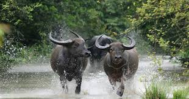
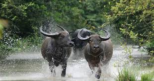
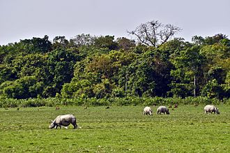
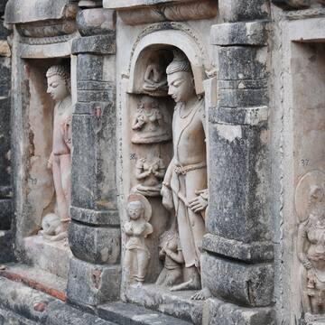
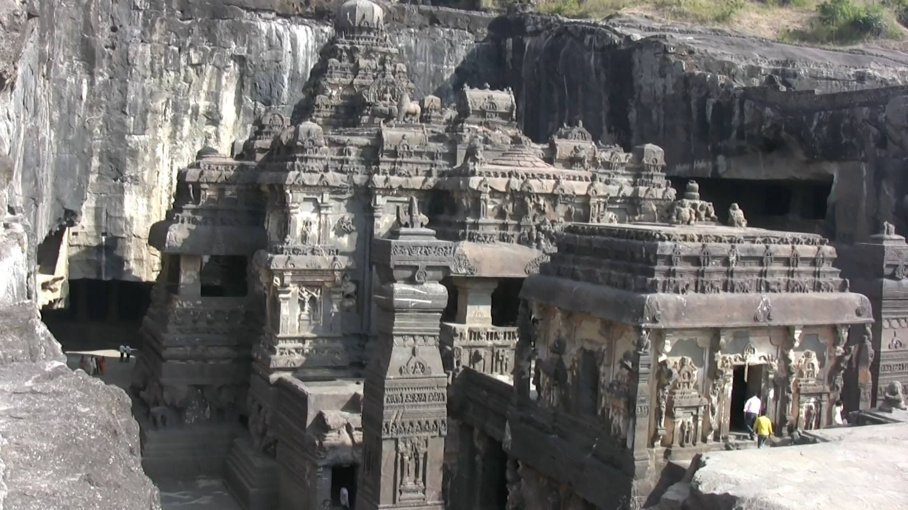
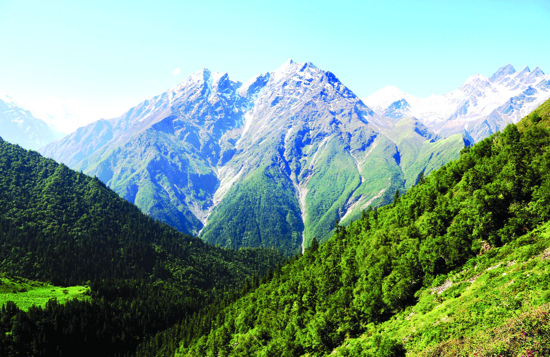

It is a national park, UNESCO Natural World Heritage site, a Project Tiger reserve, an elephant reserve and a biosphere reserve in Assam, India. Located in the Himalayan foothills, it is contiguous with the Royal Manas National Park[2] in Bhutan. The park is known for its rare and endangered endemic wildlife such as the Assam roofed turtle, hispid hare, golden langur and pygmy hog. Manas is famous for its population of the wild water buffalo.
 

Located on the edge of the Eastern Himalaya biodiversity hotspot, the park combines high species diversity and visibility.
The sanctuary, which hosts two-thirds of the world's great one-horned rhinoceroses, is a World Heritage Site.
The Nalanda Mahavihara site is in the State of Bihar, in north-eastern India. It comprises the archaeological remains of a monastic and scholastic institution dating from the 3rd century BCE to the 13th century CE.
It includes stupas, shrines, viharas (residential and educational buildings) and important art works in stucco, stone and metal. Nalanda stands out as the most ancient university of the Indian Subcontinent. It engaged in the organized transmission of knowledge over an uninterrupted period of 800 years.
Chandigarh Capitol Complex, located in the sector-1 of Chandigarh city in India, is a government compound designed by the architect Le Corbusier[1] and is a UNESCO World Heritage Site.
It is spread over an area of around 100 acres and is a prime manifestation of Chandigarh's architecture. It comprises three buildings: the Palace of Assembly or Legislative Assembly, Secretariat Building and the High Court plus four monuments (Open Hand Monument, Geometric Hill, Tower of Shadows and the Martyrs Monument) and a lake.
The incredible and chaotic city of Delhi, capital of India, is home to three World Heritage Sites. These three sites are all from the Mughal era of Indian history, and all three are among the most famous monuments in Delhi. Read on then, for our guide to the World Heritage Sites in Delhi!
Our first UNESCO World Heritage site in Delhi is Humayun’s Tomb, an incredible building which houses the tomb of Emperor Humayun.
The next of our UNESCO World Heritage sites in Delhi is a fascinating complex on the southern outskirts of town. Qutb Minar is a huge minaret, 72 metres high, constructed around 1192 by the first Muslim Sultan of Delhi.
Finally, the third of our UNESCO sites in Delhi is the imposing Red Fort. Located in the centre of Delhi, this imposing fortress was built in the late 17th century by the great Mughal emperor, Shah Jahan.
The churches and convents of Goa, the former capital of the Portuguese Indies – particularly the Church of Bom Jesus, which contains the tomb of St Francis-Xavier – illustrate the evangelization of Asia. These monuments were influential in spreading forms of Manueline, Mannerist and Baroque art in all the countries of Asia where missions were established.
Located on the banks of the historical and mythical river Saraswati in Patan, Rani ni Vav is the latest addition to the list from Gujarat. Built in the Maru-Gurjara in the 11th Century, the step-well was originally a memorial to the king, and slow took up the name of the queen.

Let me share something that you probably didn't know - in the 16th Century the capital of Gujarat was Champaner, an almost abandoned town of ruins now. Now the entire area, Champaner-Pavagadh Archaeological Park, is a UNESCO World Heritage Site and a must-visit for anyone who loves to explore architecture and history. Though the name is quite drab, let me promise you that the place isn't.


Kalka Shimla Toy Train is the rarest railway line in the world. It runs through Kalka, Dharampur, Barog, Solan and Shimla. Built in 1903, the toy train is the most exquisite project of the British Era. The track is a narrow gauge, two and a half feet wide, swirls through the blind curves of the hilly terrain of Shimla hills, the sharpest curve is at 46 degrees. Initially 107 tunnels and 864 bridges were built, now only 103 tunnels are functional.
The Great Himalayan National Park, spanning over 1736 sq. km of Tirthan and Sainj valleys in Kullu district is another gem. The park houses several endangered species of mammals, birds and vegetation. The site is known to have preserved Monal bird, Golden Eagles, Griffon Vultures, Western Tragopan (avifauna), snow leopards, Himalayan black bear, Blue Sheep, Musk Deer, Himalayan Tahr, Bharal, Ghoral, Himalayan brown bear, etc. It is not just the number of species, their population is also thriving in the region due to constant supply of fresh water from the rivulets, flowing from the glaciers. The area is highly protected for the preservation of these species.
Did you know?
The Himalayas serve as the natural barrier and separate India and Tibet.
Hampi was the capital of the Vijayanagara Empire in the 14th century.Chronicles left by Persian and European travellers, particularly the Portuguese, say that Hampi was a prosperous, wealthy and grand city near the Tungabhadra River, with numerous temples, farms and trading markets.
Pattadakal, also called Paṭṭadakallu or Raktapura, is a complex of 7th and 8th century CE Hindu and Jain temples in northern Karnataka (India). Located on the west bank of the Malaprabha River in Bagalakote district, this UNESCO World Heritage site
The Khajuraho Group of Monuments is a group of Hindu temples and Jain temples in Chhatarpur district, Madhya Pradesh, India, about 175 kilometres southeast of Jhansi. They are a UNESCO World Heritage Site.The temples are famous for their nagara-style architectural symbolism and their erotic sculptures.

Sanchi is a Buddhist complex, famous for its Great Stupa, on a hilltop at Sanchi Town in Raisen District of the State of Madhya Pradesh, India. It is located in 46 kilometres (29 mi) north-east of Bhopal, capital of Madhya Pradesh. The Great Stupa at Sanchi is one of the oldest stone structures in India, and an important monument of Indian Architecture

The Bhimbetka rock shelters are an archaeological site in central India that spans the prehistoric Paleolithic and Mesolithic periods, as well as the historic period.t exhibits the earliest traces of human life in India and evidence of Stone Age starting at the site in Acheulian times.It is located in the Raisen District in the Indian state of Madhya Pradesh about 45 kilometres (28 mi) south-east of Bhopal. It is a UNESCO World Heritage Site that consists of seven hills and over 750 rock shelters distributed over 10 km (6.2 mi)
Devi Jagadambika Temple or Jagadambika Temple is one of a group of about 25 temples at Khajuraho, Madhya Pradesh, India. Khajuraho is a World Heritage Site. The temples of Khajuraho were built by the rulers of the Chandela dynasty between the 10th and the 12th centuries.
The Western Ghats is a mountain range that covers an area of 160,000 square kilometres (62,000 sq mi) in a stretch of 1,600 kilometres (990 mi) parallel to the western coast of the Indian peninsula, traversing the states of Kerala, Tamil Nadu, Karnataka, Goa, Maharashtra and Gujarat.[1] It is a UNESCO World Heritage Site and is one of the eight hot-spots of biological diversity in the world.


It is a UNESCO World Heritage Site located in the Aurangabad district of Maharashtra, India. It is one of the largest rock-cut monastery-temple cave complexes in the world, featuring Hindu, Buddhist and Jain monuments, and artwork, dating from the 600–1000 CE period.
The Ajanta Caves are approximately 30 rock-cut Buddhist cave monuments which date from the 2nd century BCE to about 480 CE in Aurangabad district of Maharashtra state of India.
The caves include paintings and rock-cut sculptures described as among the finest surviving examples of ancient Indian art, particularly expressive paintings that present emotions through gesture, pose and form.
Elephanta Caves are a UNESCO World Heritage Site and a collection of cave temples predominantly dedicated to the Hindu god Shiva.
They are on Elephanta Island, or Gharapuri (literally "the city of caves"), in Mumbai Harbour, 10 kilometres (6.2 mi) east of Mumbai in the Indian state of Mahārāshtra.
It is a historic terminal train station and UNESCO World Heritage Site in Mumbai, Maharashtra, India. The terminus was designed by British born architectural engineer Frederick William Stevens, in an exuberant Italian Gothic style. Its construction began in 1878, in a location south of the old Bori Bunder railway station.

Having become a global trading centre, the city of Mumbai implemented an ambitious urban planning project in the second half of the 19th century. It led to the construction of ensembles of public buildings bordering the Oval Maidan open space, first in the Victorian Neo-Gothic style and then, in the early 20th century, in the Art Deco idiom. The Victorian ensemble includes Indian elements suited to the climate, including balconies and verandas. The Art Deco edifices, with their cinemas and residential buildings, blend Indian design with Art Deco imagery, creating a unique style that has been described as Indo-Deco. These two ensembles bear testimony to the phases of modernization that Mumbai has undergone in the course of the 19th and 20th centuries.

temple is the largest of the rock-cut Hindu temples at the Ellora Caves, Maharashtra, India. A megalith carved from a rock cliff face, it is considered one of the most remarkable cave temples in the world because of its size, architecture and sculptural treatment,[1] and "the climax of the rock-cut phase of Indian architecture"
Konark Sun Temple (Konark Surya Mandir) is a 13th-century CE(year 1250) Sun temple at Konark about 35 kilometres (22 mi) northeast from Puri on the coastline of Odisha, India.The temple is attributed to king Narasimhadeva I of the Eastern Ganga Dynasty about 1250 CE.[3][4] Dedicated to the Hindu Sun God Surya, what remains of the temple complex has the appearance of a 100-foot (30 m) high chariot with immense wheels and horses, all carved from stone. Once over 200 feet (61 m) high.

Jaisalmer Fort is situated in the city of Jaisalmer, in the Indian state of Rajasthan. It is believed to be one of the very few "living forts" in the world (such as Carcassonne, France), as nearly one fourth of the old city's population still resides within the fort.For the better part of its 800-year history, the fort was the city of Jaisalmer. The first settlements outside the fort walls, to accommodate the growing population of Jaisalmer, are said to have come up in the 17th century.
The Great Living Chola Temples is a UNESCO World Heritage Site designation for a group of Chola dynasty era Hindu temples in the Indian state of Tamil Nadu.Completed between early 11th and the 12th century CE, the monuments include the Brihadisvara Temple at Thanjavur, the Temple of Gangaikonda Cholapuram and the Airavatesvara Temple at Darasuram. The Brihadisvara Temple was recognised in 1987; the Temple of Gangaikondacholapuram and the Airavatesvara Temple were added as extensions to the site in 2004.
The Group of Monuments at Mahabalipuram is a collection of 7th- and 8th-century CE religious monuments in the coastal resort town of Mahabalipuram, Tamil Nadu, India and a UNESCO World Heritage Site.t is on the Coromandel Coast of the Bay of Bengal, about 60 kilometres (37 mi) south of Chennai.The site has 40 ancient monuments and Hindu temples, including one of the largest open-air rock reliefs in the world: the Descent of the Ganges or Arjuna's Penance.The group contains several categories of monuments: ratha temples with monolithic processional chariots, built between 630 and 668; mandapa viharas (cave temples) with narratives from the Mahabharata and Shaivic, Shakti and Vaishna inscriptions in a number of Indian languages and scripts; rock reliefs (particularly bas-reliefs); stone-cut temples built between 695 and 722, and archaeological excavations dated to the 6th century and earlier.

Valley of Flowers National Park is an Indian national park, located in North Chamoli and Pithoragarh, in the state of Uttarakhand and is known for its meadows of endemic alpine flowers and the variety of flora. This richly diverse area is also home to rare and endangered animals
Nanda Devi is the second highest mountain in India after Kangchenjunga and the highest located entirely within the country. The surrounding Nanda Devi National Park was declared a UNESCO World Heritage Site in 1988.
is an ivory-white marble mausoleum on the southern bank of the river Yamuna in the Indian city of Agra. It was commissioned in 1632 by the Mughal emperor Shah Jahan (reigned from 1628 to 1658) to house the tomb of his favourite wife, Mumtaz Mahal; it also houses the tomb of Shah Jahan himself. The tomb is the centrepiece of a 17-hectare (42-acre) complex, which includes a mosque and a guest house, and is set in formal gardens bounded on three sides by a crenellated wall. The Taj Mahal complex is believed to have been completed in its entirety in 1653 at a cost estimated at the time to be around 32 million rupees, which in 2020 would be approximately 70 billion rupees (about U.S. $956 million).

Agra Fort is a historical fort in the city of Agra in India. It was the main residence of the emperors of the Mughal Dynasty until 1638, when the capital was shifted from Agra to Delhi. Before capture by the British, the last Indian rulers to have occupied it were the Marathas. In 1983, the Agra fort was inscribed as a UNESCO World Heritage site

Fatehpur Sikri is a town in the Agra District of Uttar Pradesh, India. The city itself was founded as the capital of Mughal Empire in 1571 by Emperor Akbar, serving this role from 1571 to 1585, when Akbar abandoned it due to a campaign in Punjab and was later completely abandoned in 1610.

he Sundarbans is a mangrove area in the delta formed by the confluence of the Ganges, Brahmaputra and Meghna Rivers in the Bay of Bengal. It spans from the Hooghly River in India's state of West Bengal to the Baleswar River in Bangladesh. It comprises closed and open mangrove forests, land used for agricultural purpose, mudflats and barren land, and is intersected by multiple tidal streams and channels. Four protected areas in the Sundarbans are enlisted as UNESCO World Heritage Sites, viz. Sundarbans National Park, Sundarbans West, Sundarbans South and Sundarbans East Wildlife Sanctuaries.
The Darjeeling Himalayan Railway, also known as the DHR or the Toy Train, is a 2 ft (610 mm) gauge railway that runs between New Jalpaiguri and Darjeeling in the Indian state of West Bengal. Built between 1879 and 1881, it is about 88 km (55 mi) long.On 2 December 1999, UNESCO declared the DHR a World Heritage Site.Two more railway lines were later added, and the site became known as one of the mountain railways of India.
Located at the heart of the Himalayan range in northern India (State of Sikkim), the Khangchendzonga National Park includes a unique diversity of plains, valleys, lakes, glaciers and spectacular, snow-capped mountains covered with ancient forests, including the world’s third highest peak, Mount Khangchendzonga. Mythological stories are associated with this mountain and with a great number of natural elements (caves, rivers, lakes, etc.) that are the object of worship by the indigenous people of Sikkim. The sacred meanings of these stories and practices have been integrated with Buddhist beliefs and constitute the basis for Sikkimese identity.